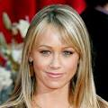
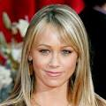

ZOOLANDER 2
Es una comedia cinematográfica dirigida por Ben Stiller y escrita con la ayuda de Justin Theroux. Es la secuela de la película de 2001 Zoolande, Un agente especial recluta a los ex modelos Derek Zoolander y Hansel para salvar a la gente más bella del mundo de un complot mortal.
Director: Ben Stiller
Recaudación: 56,7 millones USD
Presupuesto: 55 millones USD
 
